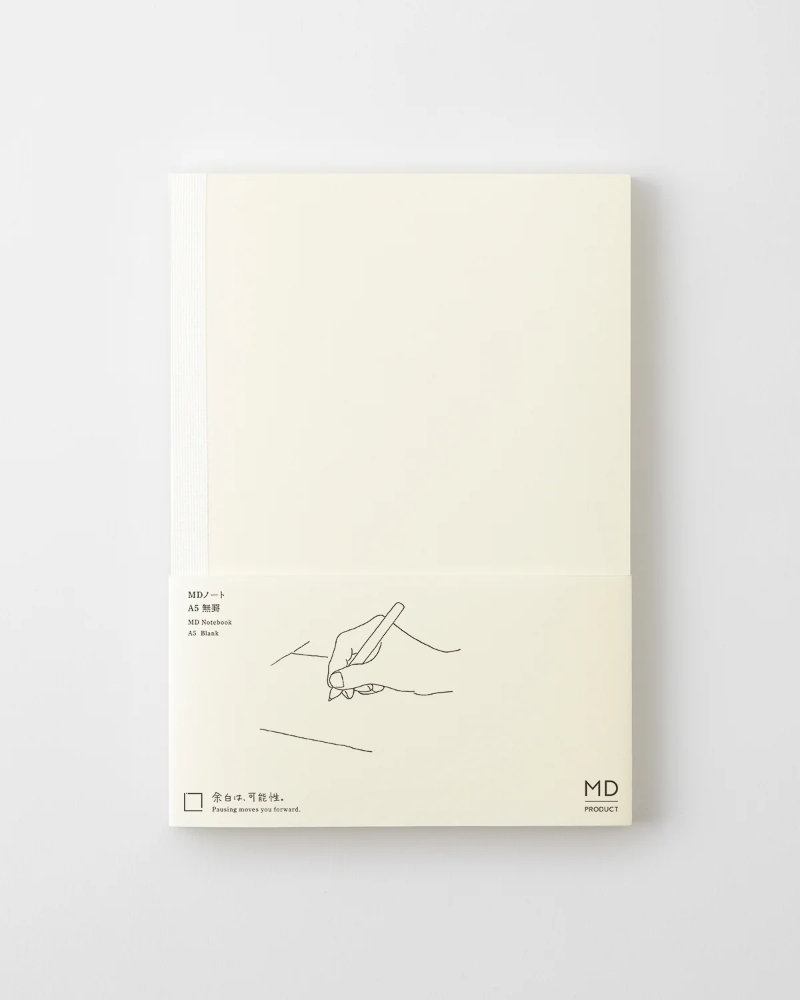
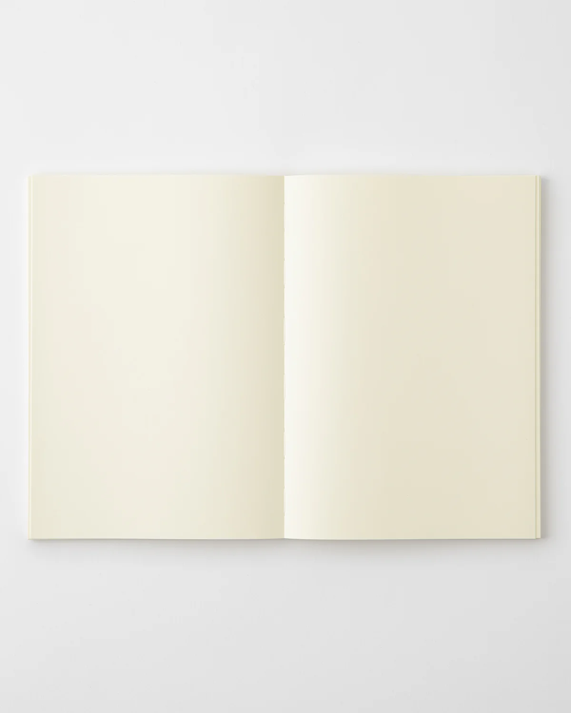
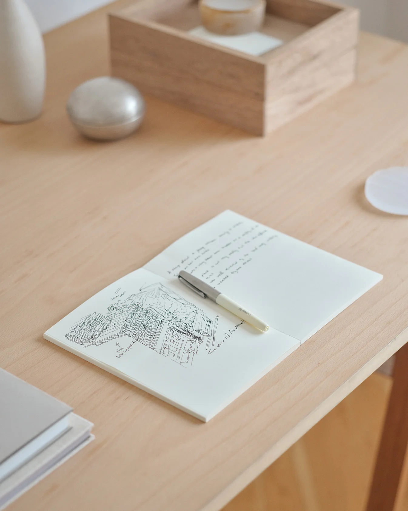
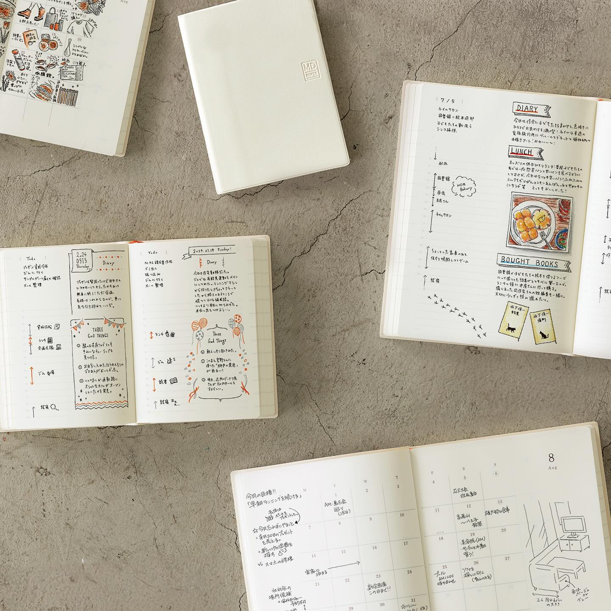

A Japanese Way of Writing
日本至今仍保留浓厚的手写文化。
无论是手帐、感谢卡、便条纸，还是日常记录，许多人依然习惯透过书写整理生活。
在日本，人们认为手写不仅是一种记录方式，也是一种表达诚意、自我整理与面对自己的过程。
这种文化，也深深影响了 MIDORI 的设计。
它并没有追求复杂的功能，而是不断思考：
怎样才能让写字这件事，本身变得更舒服。
① Made to Be Written In
MIDORI 的设计几乎没有任何多余的装饰。
封面简单。
颜色克制。
打开后，只留下大片留白。
第一次看到时，甚至会觉得：
「是不是太简单了？」
但真正开始书写以后，你会发现，
正因为没有任何设计打扰，
注意力才能完全回到文字本身。
许多人喜欢 MD Notebook 的原因，并不只是因为它漂亮，而是因为它不会让人产生「必须写得很完美」的压力。
它更像一张等待思考开始的白纸。

② The Beauty of Blank Pages
MD Notebook 最有名的，并不是封面。
而是它的纸。
MD PAPER 从 1960 年代开始被特别开发，后来 MD Notebook 也以这种纸张为基础，追求更舒服的书写体验。
钢笔、铅笔、中性笔，都能自然地滑过纸面。
纸张也经过特别设计，以减少晕染与渗透，并保留细微的书写触感。
很多人真正喜欢它，并不是因为纸张规格，
而是因为：
写字的时候，会慢慢忘记笔记本的存在。
所有注意力，
都回到了思考本身。

③ A Notebook That Grows With You
MD Notebook 能够完全摊平 180 度。
没有写到一半需要压住页面的不便。
也没有因为装订影响思绪。
一本可以用来写旅行。
一本记录工作。
一本收藏每天想到的事情。
当一本笔记本慢慢被写满，
它就不只是一本文具。
而是一段时间留下来的痕迹。
我想，
这也是它一直受到喜爱的原因。

Why Soft Archive Collects It
A Small Detail I Love
没有日期、没有格式、没有规定该怎么写。
它只是留下一本安静的空白本子，等待每个人写下属于自己的故事。
What Caught My Attention
- 官方摄影几乎只有纸、笔、光，没有复杂布景。
- 产品总是在真实书写，而不是只是展示商品。
- 整体设计保留大量留白，让文字成为真正的主角。
- 我很喜欢它像是在等待属于它的主人，开始新的篇章。
MD Notebook A5
一本设计安静到几乎让人忘记它存在的笔记本。
当最后一页也写满的时候，它已经不只是一本笔记本，而是一本属于自己的故事。
Archive Information
| Theme | Write | 书写 |
| Theme Color | Mist Gray |
| Country | Japan |
| Location | Tokyo |
| Founded | 1950 |
| Category | Writing & Stationery |
| Materials | MD PAPER · Paper |
Who It’s For
- ✍️ 喜欢手写与记录的人
- 📖 喜欢整理思绪的人
- ☕ 喜欢安静独处的人
- 🌿 想寻找一本能够陪伴很多年的笔记本的人
有时候，我们写下来的，并不是答案，而是那些还没有想明白的事情。
MIDORI 提醒了我：一张空白的纸，不只是等待被写满，也等待着我们慢慢认识自己。
或许，书写真正留下来的，并不是字迹，而是那个愿意停下来，与自己对话的时刻。
Sources
This archive is an independent editorial project by Soft Archive. Product names, trademarks and images belong to their respective owners. Soft Archive is not affiliated with MIDORI or MD PAPER PRODUCTS.